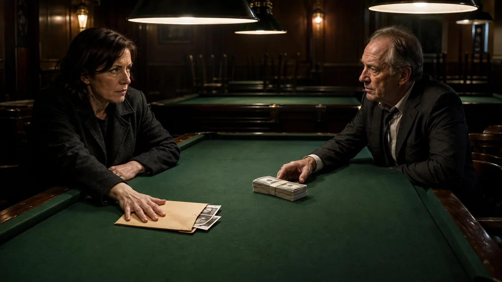
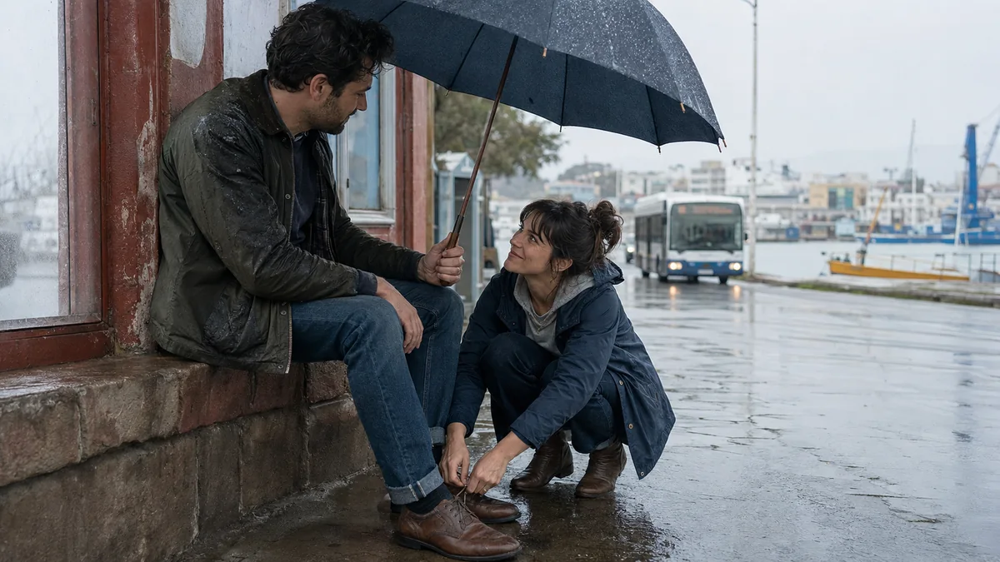

01 / THE SKILLS & THE WORKFLOW
From an idea to a film you can review.
Open Film Skills helps Codex, Claude Code, TRAE, CodeBuddy, WorkBuddy,
and compatible Agents write stories, lock reusable assets, design
cinematic shots, build prompts, and organize AI-video production.
从剧本和导演判断，到视觉风格、人物场景道具、分镜与提示词，再到按需生成与成片验收；已有方案直接接续，要哪一步，就交付哪一步。
- Regular modules
- 18
- Experimental modules
- 3
- Independent modules
- 21
- Bilingual guides
- 42
01 / HOW THE PARTS CONNECT
Start from the material you already have.
The full route connects writing, directing, visual language, assets, shots, prompts, optional previs, generation, editing, sound, playback, and user review. Existing material enters at its relevant stage.
- 01Writestory · cause · dialogue
- 02Directperformance · reveal
- 03Visualsstyle · people · space · props
- 04Shotsblocking · camera · cuts
- 05Promptscompile the chosen design
- 06Make & reviewgenerate · edit · watch · repair
Creative-shot ideas remain optional suggestions until selected. Text requests can finish with the text. Images, previs, and videos run when the current request explicitly calls for those media.
Open the current A workflow at full size · Compare the prior workflow, revised A, and optional B
02 / CAPABILITIES, PURPOSES & IMAGES
See what each stage helps you decide.
These existing original stills illustrate visual storytelling choices. Their individual acceptance records do not approve every Skill behavior or the new comparison set.
STORY & DIRECTION

Turn a scene into choices
Write or repair causality, character action, dialogue, performance, and the order in which the audience discovers information.
director-agent delivers readable screenplays and director plans, with AI-executable compilation only when needed.
Explore writing and directing
VISUALS & ASSETS

Give the world continuity
Choose a visual language, then establish the characters, places, and props the story actually needs. Reuse approved assets.
Character, scene, and prop Skills deliver designs, prompts, or requested reference images. Visual routes support them without deciding the story.
Explore visual routes and the three asset Skills
SHOTS & PRODUCTION
Make the chosen view executable
Develop camera position, movement, focus, blocking, timing, sound, and cut points. Compile selected shots into prompts without redesigning them.
Requested video production adds generation, selection, editing, sound, complete playback, and repair.
Explore storyboard and prompt design
Eleven visual routes: cyberpunk, epic, fantasy, horror, noir, romance, war, wuxia, experimental hard science fiction, experimental guofeng, and external xianxia. External xianxia is outside the repository's 21 distributed modules. View the existing stills' source and acceptance records.
02 / THE COMPLETE NEW RESEARCH
Seven stories. Three versions. The same source.
Compare 30-second director storyboards for suspense, horror, romance, close combat, gunfire rescue, racing, and superpower action. Each story uses the same characters, setting, dialogue, and ending across 5.6.5, A 5.7.1, and B 5.7.1-jev.
Look at what the audience sees first, the camera's relationship to the action, continuity, and the ending. Shot count alone does not determine the better design.
The 21 new boards are static comparison images awaiting individual review. They are not 21 accepted results or proof of generated-video motion. Recorded drawing errors remain visible in the research notes.
Open all 21 full-size comparison boards
Read the seven-story comparison and observed issues
Explore the complete overhaul research · Review the 5.6.5 + A fusion direction
02 / USE THE CAPABILITY YOU NEED
Choose one Skill and its current source.
npx --yes skills@latest add 62656456/ai-film-skills --list
npx --yes skills@latest add 62656456/ai-film-skills \
--skill ai-storyboard-director \
--agent codex \
--copy \
--yes
The source catalog contains 18 regular and 3 experimental modules, each with an English and a Simplified Chinese guide. Market research, approved knowledge writing, short-drama control, optional previs, and independent web work have separate entry conditions.
Historical CLI discovery evidence is retained separately. Current host activation and real task behavior must be checked for the installed source; an old Release download is a different version.
03 / VERSION UPDATES
Current use, optional review, and history.
The maintainer's current A 5.7.2 maintenance update is selected by the user's explicit instruction. This activation does not approve every comparison image or establish three-task practice stability.
A 5.7.2 — current maintainer default. Keeps storyboard design, prompt compilation, and actual generation in their requested stages. Creative-shot ideas stay separate until selected; shared facts and chosen shots survive local revisions. A uses the main model's text review without Jev.
B 5.7.1-jev — optional text review. Uses the same creative core and adds explicitly enabled Jev checks of submitted text and locked facts. Jev does not inspect images, decide aesthetics, automatically rewrite shots, or approve a version.
5.6.5 — comparison and rollback baseline. Preserved as the prior local workflow and common-story comparison baseline. The fusion direction retains selected strengths and the user's exact choices; a preferred sample does not validate every output.
v1.4.0 / 5.7.2 — current maintenance Release. Includes all 21 independent packages and the 18 regular-package complete archive, with explicit manifests and checksums.
v1.3.0 / 5.4.4 — historical Release. Published v1.3.0 assets contain the older 5.4.4 snapshot. Its examples, the separate 5.6 Preview, and newer source are distinct artifacts. The older Director example remains SELF-AUDIT ONLY.
Read the latest changes and research · Download v1.4.0 · Read the check, test, activation, and rollback process · Read A/B review boundaries · Inspect the historical v1.3.0 Release